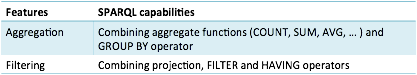
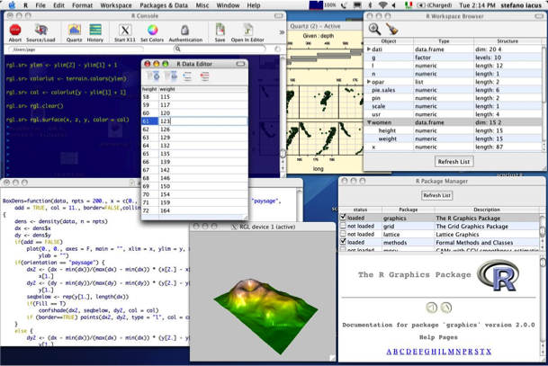

In the first part of this chapter we looked at how visualization techniques can be used to reveal patterns in the data. In this section we consider how statistical and machine learning techniques can be used to identify patterns in data. Statistical and machine learning techniques are complementary rather than an alternative to visualization. When analysing data statistically it is good practice to first visualize data to get an idea for what statistical patterns may be expected and therefore which statistical methods to apply. Similarly, visualization is commonly used to explore and describe any pattern detected from statistical analysis and machine learning.
A preliminary step in data analysis is data aggregation. This may be used to merge or summarise the data. This creates the view over the data required for more advanced analysis. This is described in section 4.23.1. Once the appropriate view over the data has been constructed then statistical techniques can be applied, finding for example correlations between the properties. Statistical analysis of linked data is introduced in section 4.23.2. Finally, machine learning can be applied to data in order to learn new groupings or clusters in the data not explicitly defined in the dataset. Machine learning is introduced in section 4.23.3.
Much of the data aggregation and filtering that might be required to construct the desired view over the data can be carried out using SPARQL. Data can be aggregated using SPARQL functions such as COUNT, SUM and AVG. COUNT returns that number of times the expression has a bound value when the query is run. The functions SUM and AVG return the sum and average bound value. The GROUP BY operator is used in SPARQL to divide the solutions into the groups for which an aggregate value should be calculated. Chapter 2 describes a SPARQL query for returning the playing time of an album by calculating the SUM of its track durations.
SPARQL also has operators that can be used for filtering the results to be returned. FILTER restricts results to those that match a specified triple pattern. HAVING operates in the same way as FILTER but on sets of solutions returned by the GROUP BY operator. See chapter 2 for examples of SPARQL queries using the FILTER and HAVING operators.

Figure 55: Aggregation and filtering using SPARQL.
More complex forms of statistical analysis go beyond what can currently be supported by SPARQL. As we have seen above, SPARQL can be used to calculate an average or sum but could not be used to perform other statistical techniques such as regression or analysis of variance. Some approaches [30, 31] can be used to apply statistical techniques directly to data retrieved from a SPARQL endpoint. Without these techniques, the data to be analysed would need to be downloaded in a tabular format and then opened using a statistical package.
R [32] is a free computing package that can be used to carry out a range of statistical techniques including linear and non-linear modelling, time series and analysis of variance. It can also be used to perform machine learning tasks such as clustering and classification. R has a graphical user interface and can also be used to generate visualizations of the data.

Figure 56: The R statistical computing package.
The R for SPARQL package can be used to retrieve data from a SPARQL endpoint over HTTP. A SELECT query returns a result set as what is referred to as a data frame. Visualizations, using some of the techniques described in section 4.6, such as a choropleth map, can also be generated from a data frame.
Machine learning techniques can be used to discover hidden patterns with the dataset. A number of different machine learning techniques can be applied to linked data for different purposes.
Clustering is a technique used to organise a set of items into groups or clusters based on their attributes. In the case of Linked Data, clustering could be used to organise a set of resources on their properties and values. For example, resources representing music albums could be organised. This might reveal certain clusters, based on properties such as duration, artists and year of release. It may be possible to associate names with some of the identified clusters, for example the music albums in a cluster may form a particular genre not explicitly represented in the dataset. This may lead the data analyst to explicitly specify this class in the dataset and assign the albums in the cluster to this class.
Association rule learning is a data mining technique often used to discover relations between variables. Association rules express some regularity or predictability. In the case of Linked Data, association rule learning may discover a pattern. For example if the dataset contained information on albums and which of these are “liked” or owned by a number of people, a rule may be identified that can predict a preference for one album from other albums. This could potentially be used to assert additional relations between the albums included in the rule.
Decision tree learning is a machine learning technique that can be used to define and then predict the classification of a set of items. The decision tree produced by the learning process can predict the classification of an item in answer to a series of questions that lead from the root node to a leaf of the decision tree. In a Linked Data context, decision tree learning could be used to describe and then predict the class membership of a set of instances from their properties and values. For example a subclass of albums representing albums of a particular genre could be predicted from properties such as artist and recording label. This could be used to propose class membership for a set of albums in the dataset that have this information missing.
WEKA [33] is a data mining framework that can be used to apply machine learning techniques to a dataset represented in a tabular format.
The application of machine learning techniques to Linked Data raises a number of challenges [34]. Linked Data is heterogeneous. Different URIs from different datasets may refer to the same resource. Also similar properties but with different constraints may be drawn into the same dataset from different sources. There can also be a high level of redundancy among strongly related parts of the dataset of different origin. This noise and duplication can create performance problems for machine leaning algorithms. Another problem for machine learning is the lack of negative examples. For example, decision tree learning can be used to predict membership among disjoint classes. However, in datasets, even if classes are disjoint that is rarely specified. Also the property owl:differentFrom expressing two resources are not the same can assist the application of machine learning but these negative forms of statement are rarely used.
Machine learning can have a number of applications to Linked Data. First, machine learning can be used to rank nodes according to their relevance to a query. This can be used to prioritize results in a user interface. Second, machine learning can be used for link prediction, proposing new edges between nodes in the RDF graph. Third, entity resolution can be supported, identifying URIs that potentially refer to the same real World object rom similarities in their properties and values. Fourth, techniques such as clustering can be used to propose taxonomies classifying a set of instances. This can be particularly useful when the taxonomy available to classify a set of instances is weak or absent in the dataset.